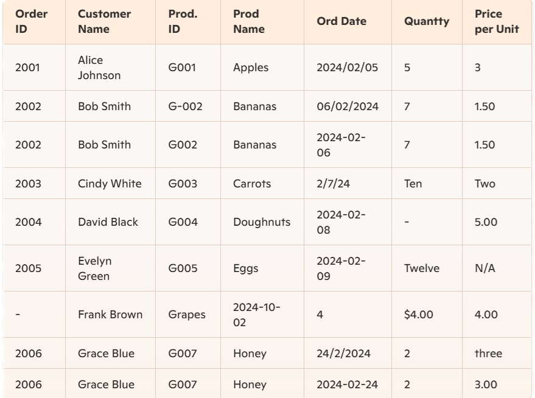

In today's digital age, data is the lifeblood of innovation and decision-making. Every second, millions of emails are sent, thousands of tweets are posted, and millions of transactions occur online, continuously generating a wealth of data. But what exactly is data, and why is it so crucial?
What is Data? Data is information in its raw form—an endless stream of numbers, dates, and text that can be collected, stored, and analyzed. In its raw state, data can appear as mere noise, but it holds the potential to reveal hidden stories, patterns, and insights that can drive smarter decisions and spark innovation. Essentially, data is a bundle of facts and details about what is happening over a period. What we're truly seeking in data is more profound: the underlying patterns and insights that tell a meaningful story.
What is Data Analysis? Data analysis is about uncovering the underlying patterns and trends that reveal how the world works. For businesses, these patterns could highlight customer preferences, operational inefficiencies, or emerging opportunities. In healthcare, data analysis might uncover trends in disease outbreaks or predict treatment effectiveness. For individuals, it could mean better financial planning or healthier lifestyle decisions.
The power lies not in the data itself, but in our ability to understand it—connecting the dots to create a meaningful story. This is where a data analyst steps in, transforming complex data into clear insights that drive informed decisions.
For businesses, data analysis can reveal customer preferences, operational inefficiencies, or emerging opportunities. In healthcare, analyzing data could uncover trends in disease outbreaks or predict treatment effectiveness. For individuals, it might mean better financial planning or healthier lifestyle decisions. The value of data comes from our ability to interpret it—connecting the dots to create a meaningful story. From Raw Data to Valuable Knowledge
The Process of Data Analysis:
1. Collecting the Right Data: Not all data is valuable. Identifying the specific data that aligns with your goals is the crucial first step in uncovering meaningful insights. 2. Finding Patterns and Outliers: This step involves analyzing data to find trends (consistent patterns over time) and anomalies (unexpected changes). Trends show what’s consistent, like sales increasing every summer, while anomalies highlight unexpected events, like a sudden drop in performance. Understanding both helps make better decisions and uncover opportunities or issues. 3. Interpreting the Story: Numbers alone can’t tell a story. Interpretation turns raw data into actionable insights that guide smarter, evidence-based decisions.Example: Analyzing Customer Purchase Data Let's analyze customer purchase data. The data might be messy—missing values in fields like Order ID and Quantity, inconsistent product names like ‘Apples,’ ‘apple,’ and ‘Fruit Apples,’ quantities written as text like ‘Ten’ and ‘Twelve,’ inconsistent date formats, and some duplicate orders.
As an analyst, you would:
1. Fill missing values in fields like Order ID and Quantity with placeholders like ‘Unknown’ or ‘0’.
2. Standardize product names (e.g., converting ‘Apples,’ ‘apple,’ and ‘Fruit Apples’ all to ‘Apples’).
3. Standardize inconsistent date formats.
4. Remove duplicate rows to clean up the data for accurate analysis.
This process is known as data cleaning, ensuring the data is ready for meaningful analysis and insights. This step is considered the most critical aspect of a data strategy because without clean data, any analysis or insights derived from it are likely to be flawed and unreliable.An interesting fact is that a data analyst often spends around 80% of their time on data cleaning. This time-intensive process is crucial because it ensures that the data used for analysis is accurate, consistent, and complete, which forms the foundation for deriving meaningful and actionable insights. By dedicating such a significant portion of their work to data cleaning, analysts emphasize the importance of quality data in making informed decisions and driving business success.
Data profiling and data wrangling are two other terms that we commonly encounter when working with data.
Data Profiling provides a high-level view of data quality and content. It refers to the process of examining and summarizing data characteristics. It involves analyzing data to understand its structure, quality, and content. This includes identifying patterns, detecting duplicates, checking for missing values, and verifying data consistency. It is typically done first when preparing data. It helps in understanding the nature of the data, identifying potential problems, and guiding the subsequent data cleaning efforts. Profiling provides a snapshot of the data’s quality before any modifications are made.
Data cleaning is performed after data profiling and before data wrangling. It is used when the data is already collected but needs refinement to make it usable for analysis. This includes tasks such as filling missing values, standardizing formats, and removing duplicates.
Data Wrangling is about reshaping and structuring the data to prepare it for analysis. It is the process of transforming, mapping, and structuring data from its raw form into a format that is suitable for analysis. Data wrangling comes after data cleaning. It is used when data needs to be manipulated and transformed to match specific analytical needs. This might include joining multiple datasets, pivoting data for easier analysis, or restructuring data formats
Once data is cleaned and structured, EDA comes into play. Exploratory data analysis is an analysis technique to analyze and investigate the data set and summarize the main characteristics of the dataset. Main advantage of EDA is providing the data visualization of data after conducting the analysis.
After EDA, the next step often involves modeling and analysis. This phase focuses on using the insights gained from exploratory data analysis to build predictive models or apply statistical methods. The objective is to use the patterns and relationships identified in EDA to make predictions, optimize outcomes, and support informed decision-making.
Data is a valuable resource in today’s digital age, and each step in the data analysis process—from profiling and cleaning to wrangling—plays a crucial role in uncovering meaningful insights. By transforming raw data into a structured and analyzable form, we can make informed decisions that drive business growth, improve healthcare, and enhance individual lives. Understanding these steps is essential for anyone who wants to leverage the full potential of data to solve problems and make smarter choices.